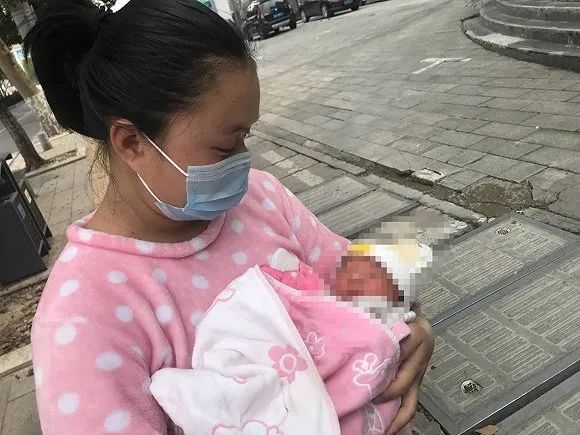

特稿|既是摆渡人又是送餐工 市民互助守护江城
原文链接 备份链接 【财新网】（记者 赵宁 萧辉 汪苏 丁捷）2月17日晚10点，30岁的志愿者司机喻巅送完最后一名护士，匆匆回到家。这是喻巅连续跑车的第24天。1月23日10时起，武汉“封城”，迄今一个月。昔日繁华喧嚷的江城，将滚滚人 …
图片来源：图虫
“
在洪山区防疫指挥部的帮助下，我们住进了当地的一家酒店。
”
湖北省黄冈市市民阮祥银带着“熊猫血”妻子赴汉分娩。孩子顺利出生后，他们却卡在一张通行证上，武汉当地也没有酒店能够接收他们。阮祥银只能带着岳母、妻子和刚出生的儿子住在车上。
2020年2月24日晚，在武汉市洪山区防疫指挥部的协调安排下，阮祥银住进了该辖区内的一家酒店，结束了数天车上的生活。
以下是阮祥银的口述：
我是黄冈市红安县人，今年31岁，从事汽车行业，大女儿今年2岁了，去年妻子又怀了孕。但我们喜忧参半。
我的妻子是“熊猫血”（Rh血型），生育本来就是很麻烦的事。临到分娩，没想到又遇到新冠肺炎这么大的事。
我们到红安县医院和黄冈市医院产检的时候，医生们明确告诉我们，整个地区都缺这个血，怕出意外，建议我们还是到武汉来待产。无奈之下，我只能带着妻子出城。
出城前，我们先在当地政府开了通行证，其实就是一个介绍信，说明我们现在的情况和不得不去武汉就诊的理由。
2020年2月4日，我们准备去同济医院待产——因为我们家大女儿就是在同济生的。但是看到同济医院基本只接收新冠肺炎患者的状况，我们决定去湖北省妇幼保健院进行产检。当天产检很顺利，拿着红安县方面开的通行证，我们也顺利出了武汉，回到家中。
2020年2月12日，眼看着预产期将近，我和岳母又带着妻子去了武汉。那几天，妻子住在产房里，我和岳母就在车上“凑合”。
20日上午10点，儿子出生了。其实省妇幼保健院也没有“熊猫血”的储备，但好在母子平安，一切都很顺利。那几天，我和岳母可以在三楼的病房里照顾妻子，好歹有了住的地方。
孩子刚刚出生3天。受访者供图
23日上午9点多，妻子的各项检查都出来后，查房医生便通知我们出院。省妇幼保健院的床位也很紧张，我们也非常理解。中午，我们4个人便决定开车回家。
没想到的是，我们出不去了。
当天下午1点，我们开车来到青龙收费站，被疫情防控人员拦了下来。我也给他们看了介绍信，但被告知只能用“武汉出的通行证”。即便妻子抱着刚出生的孩子给他们看，还是沟通无效，我们只能作罢。
今天凌晨3点，我们决定再去试试，还是被拦了下来。我们没有任何办法，只能回到医院的停车场，3个大人和一个刚出生的孩子，在车上随便睡了2个小时。我的车是普通大众车，车内空间很小，空气也不好，孩子不停地哭，我们3个大人急得没有办法，除了跟着他哭，也没有什么能做的。
 油箱见底，阮祥银一家不得不就近找到加油站加油。受访者供图。
油箱见底，阮祥银一家不得不就近找到加油站加油。受访者供图。
看到这个情况，我们决定在武汉先安顿下来。但我们对武汉不熟，在医院附近找了十几家酒店，要么关门，要么是被征用的酒店。我们也去找了当地的派出所，民警们的态度特别好，特别热心，开着车带我们去了一家专门安置滞留外地人的酒店。但现在的情况谁又能说清楚要住多久？酒店方面一听说我儿子刚刚出生，也不敢接收，怕孩子太小，时间长了，出了问题谁也付不起责任。
今天下午，我们去了武昌区政府，听说武昌区防控指挥部就在里面办公，我在门口碰到了一个也想办理通行证的人。他说，他是重庆人，徒步一个多小时赶到这里。但保安经过电话与里面的工作人员沟通后，告知我们现在办不了通行证。
后来，我们又通过电话与工作人员沟通。对方告诉我，提交所在地接收证明、医院健康证明和离汉申请后，可以办理通行证。但是后来她发现，省妇幼保健院所属辖区是洪山区，无法为我们办理通行证。我们只能再到洪山区政府碰碰运气，
2月24日晚上，在洪山区防控指挥部协调下，珞南派出所民警给我们在辖区内找到一家可以接收的酒店。民警很热心，叮嘱我们尽量不要外出，并告诉我们，社区方面可以给我们采购物品。
现在，我们总算不用住在车里了。但坦白说，孩子还小，我们还是想尽快回到老家。到家以后，居家隔离还是定点隔离，怎么样都好。
未经授权 禁止转载

原文链接 备份链接 【财新网】（记者 赵宁 萧辉 汪苏 丁捷）2月17日晚10点，30岁的志愿者司机喻巅送完最后一名护士，匆匆回到家。这是喻巅连续跑车的第24天。1月23日10时起，武汉“封城”，迄今一个月。昔日繁华喧嚷的江城，将滚滚人 …
原文链接 备份链接 预产期临近的产妇，是这次新冠肺炎防疫中极易被忽视的群体，她们无法脱离医院环境，极易被感染，牵涉到两条生命。在疫区，一些产妇和家人在迎来新生命的欣喜中，也面临着生死考验，同样被考验的，还有仅仅只有几天大的婴儿。 …
原文链接 备份链接 转眼之间，武汉封城，已有九日。绝大多数人都闭门在家时，一些还在为城市运送物资和生活用品的人，在尽其所能保障着城市的基本运转。如果把现在的武汉比喻成一具遭受病毒侵袭的人体，他们就像是人体里细小密集的毛细血管，努力延续着这 …
原文链接 备份链接 ********** *****据支援联盟数据统计，从1月23日开始，武汉地区271家酒店（湖北其他城市约47家）为医护人员提供免费住宿，截止到1月30日晚9点，联盟合计为6056位医护人员提供了超过4万个间夜的住 …
原文链接 备份链接 昨天，我们发起了征集，请身在疫区的同胞、奋战在疫情第一线上的医护人员、全国各地留守家中防疫的人们讲述这个春节发生的真实故事，在后台收到的近百份留言中，我们筛选并刊登如下，我们是倾听者，也是见证者—— 01 这个春节，是 …